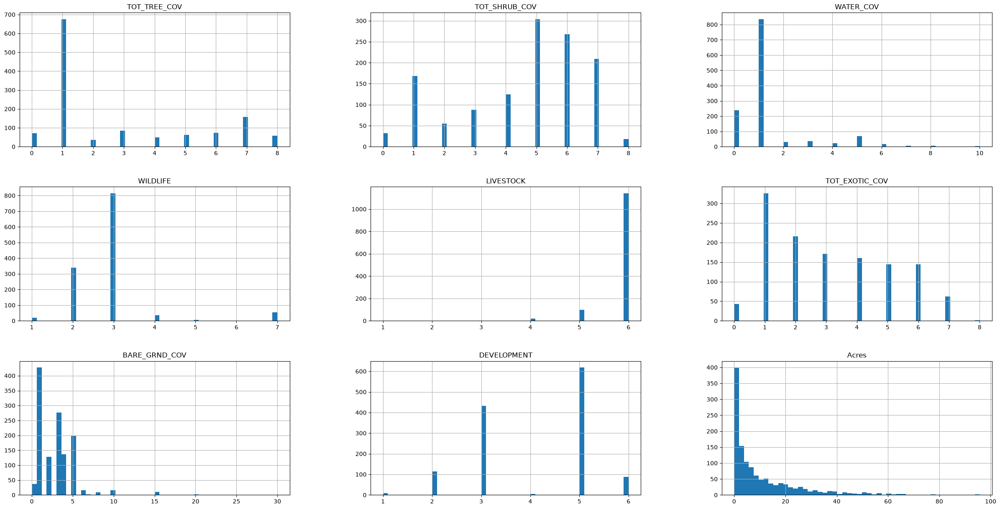
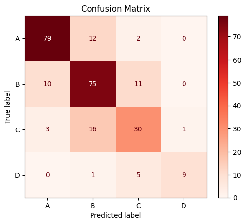
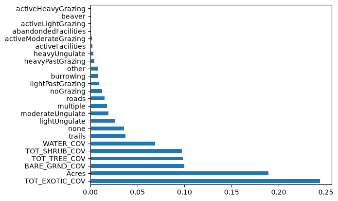

Exploring ecological health in Washington State Parks using Machine Learning
INFO 4604 | Portfolio Project 1
This project uses open data from Washington State's geospatial data program to analyze connections between ecological health within state parks and relevant predictive factors.
Which environmental and ecological characteristics are most useful for predicting vegetation conditions in Washington State Parks?
The analysis uses a vegetation surveys dataset. This dataset contains various environmental measurements in Washington State parks, as well as a ecological health rank rating. The CSV download will be linked below:
Download Dataset (CSV)I originally identified 13 potential predictors from the dataset, which later turned into 9 due to incomplete/unformatted entries is certain columns. These turned out to be:
My target variable was an ecological rank classification ranging from A - F. After checking for feature imbalance, I ended up combining ranks D - F into a D rank to create a more balanced dataset. I excluded outliers leaving myself with this these distributions:

Then I used one-hot encoding to encode my categorical features. I used this method becuase though my features were ordinal, they did not have set ratio variations, and were therefore not fit for ordinal encoding. I used a min-max scalar to scale my data, and checked for correlation making sure no columns had a correlation greater than .85.
I used an 80-20 train-test split. Then I trained a random forest model with 42 decision trees.
xTrain, xTest, yTrain, yTest = train_test_split(x, y, test_size=0.2, stratify=y)
model = RandomForestClassifier(n_estimators=42)
model.fit(xTrain, yTrain)
yPred = model.predict(xTest)
print(accuracy_score(yTest, yPred))
The model had an accuracy score of .7598. The confusion matrix shows that the model had more success predicting the A and B class, while it struggled more with the lower classes. This is likely due to less data within these categories.

It seems that exotic species coverage was the most predictive, with size, bare ground coverage, tree coverage, and shrub coverage also factoring in considerably.

Though this model examines a small subset of ecological predictors, and only looks at one vegetation survey rank, its methodology could be applied to a wide array of predictors and rankings. These results identified exotic species, amongst other factors, as a very strong indicator of ecosystem health.
The complete, annotated notebook is viewable here.
View Full Jupyter Notebook View Project on GitHub